Agriculture employs more than 70 percent of Uganda's population, so climate variability hits the economy hard. The Uganda Agricultural Insurance Scheme (UAIS) was set up to protect farmers against this risk, and it now reaches over one million of them. Even so, the scheme still runs on fragmented climate and agricultural data, so insurers and regulators lack a shared, reliable base for pricing and oversight.
The Financial Resilience in Agriculture (FRA) Initiative, funded by the Gates Foundation and implemented by UNDP Uganda, is building a Climate Data Platform (CDP) to close that gap. The platform will turn rainfall, vegetation, soil moisture and evapotranspiration data into insights that insurers, regulators and government agencies can act on directly. Read more about UNDP's work on climate resilience in agricultural finance and insurance ↗.
Dream71 Bangladesh Ltd was engaged as the technical partner for the CDP. This mission to Kampala and Mukono district, from 23 to 28 August 2026, was built around five objectives: assess the existing UAIS data ecosystem, consult stakeholders on their requirements, validate available datasets, define the platform's architecture and governance model, and develop use cases for insurers, regulators, government agencies, financial institutions and farmer organizations.
The Mission, Day by Day
Four working days in Kampala and on the road to Mukono, from the first data review to the closing debrief.
Monday, 24 August 2026
UAIS Data Architecture and Insurance Portfolio Review
The mission's first working session was a technical review of UAIS's existing systems, led jointly by AIC and UNDP. The Dream71 team went through the current data architecture, the agricultural insurance portfolio, and how data currently flows between systems, building the shared baseline the rest of the mission would build on.
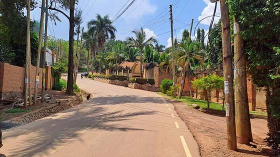
ViewArriving at the AIC office compound in Kampala ahead of the first technical review session.
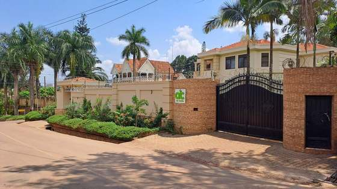
ViewApproaching the venue that hosted the UAIS data architecture review on the mission's first working day.ViewThe Dream71 and AIC/UNDP team opening the review of UAIS operational systems and data flows.
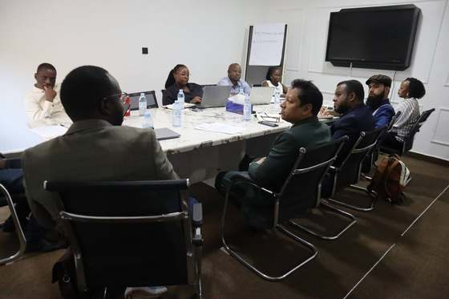
ViewDream71 and AIC/UNDP counterparts around the table for the UAIS data architecture and insurance portfolio review.
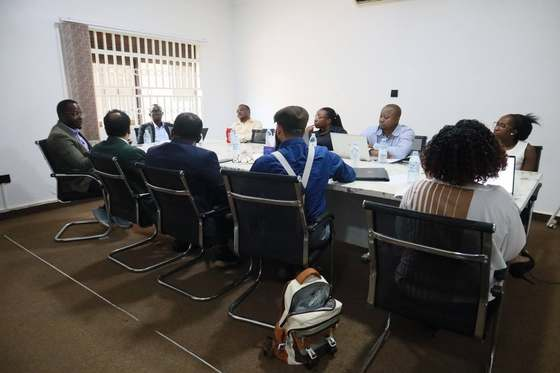
ViewThe review continues, covering existing insurance product data flows and the current technology environment.
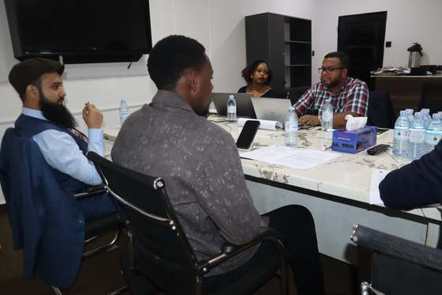
ViewA closer working discussion during the UAIS data architecture review, going through the technical detail with AIC and UNDP counterparts.
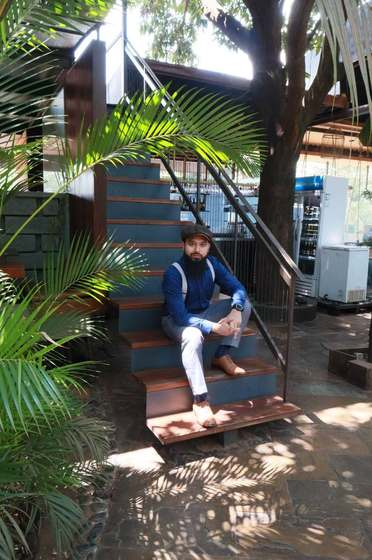
ViewA short break in the office garden between sessions on the mission's first working day.
Tuesday, 25 August 2026
CDP Progress Presentation to UAIS Anchor Partners
After a working breakfast, Dream71 presented the Climate Data Platform's progress to UAIS anchor partners: MoFPED, IRA, Bank of Uganda, the Ministry of Water and Environment, and the National Planning Authority. The session walked through the platform's modules and datasets and worked toward agreement on priority use cases.
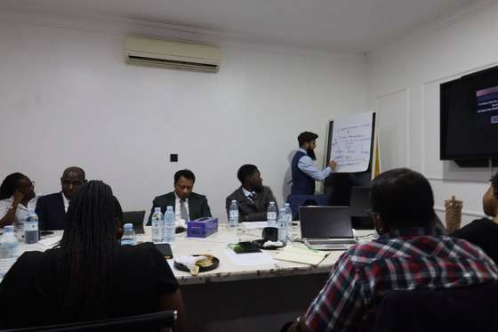
ViewThe Dream71 team presenting the Climate Data Platform's progress to UAIS anchor partners.
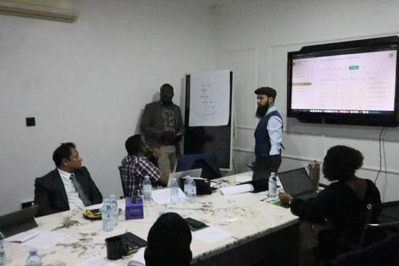
ViewA module walkthrough during the presentation to MoFPED, IRA, BoU and other anchor partners.
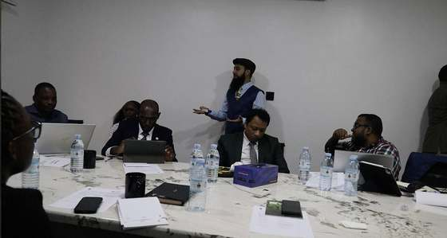
ViewPresenting the platform's risk analytics module to the anchor partners.
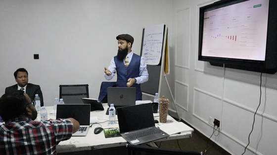
ViewWalking anchor partners through the climate datasets feeding the platform.
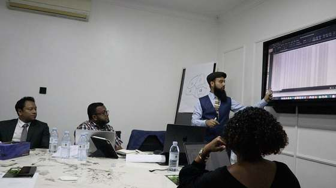
ViewA closer look at one of the platform's dashboards during the presentation.
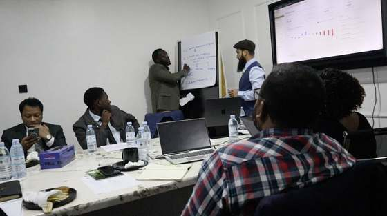
ViewFielding questions from anchor partners on the platform's roadmap.
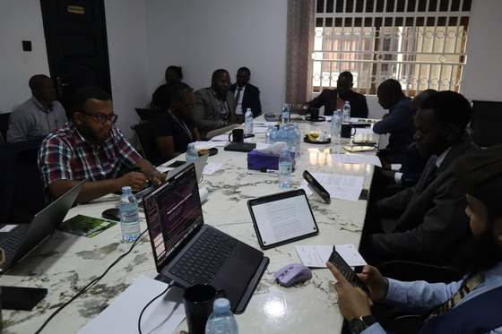
ViewUNDP, MoFPED, IRA, BoU and AIC representatives at the working breakfast ahead of the CDP progress presentation.
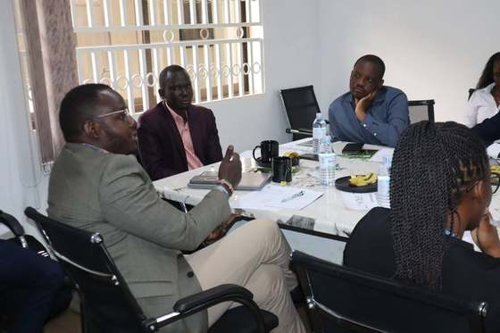
ViewDiscussion among anchor partners on the Climate Data Platform's priority use cases.ViewMahir Shahrier with Enock Sing'oei, UNDP's Agriculture and Climate Insurance Lead for the Financial Resilience in Agriculture initiative, who headed the UNDP delegation for this mission.
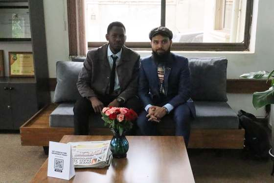
ViewA quiet moment at the AIC office reception between sessions on Tuesday.
Technical Courtesy Meeting with Cafe Africa
In the afternoon, AIC, UNDP and Dream71 held a separate technical courtesy meeting with Cafe Africa, introducing the platform's coffee-sector strategy and discussing how coffee value-chain data could feed into the Climate Data Platform.
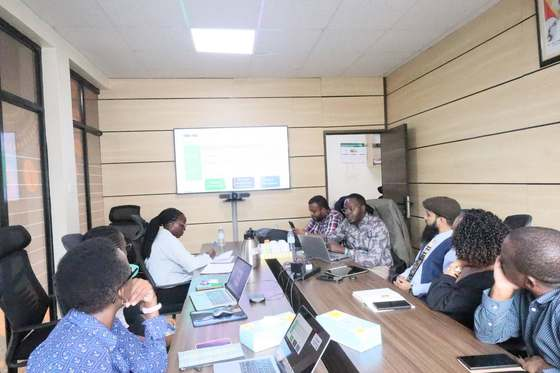
ViewArriving at Cafe Africa for the afternoon technical courtesy meeting.
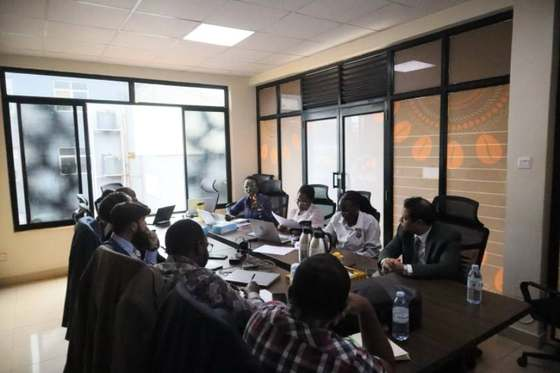
ViewThe Dream71 and AIC team meeting with Cafe Africa to discuss the platform's coffee-sector strategy.
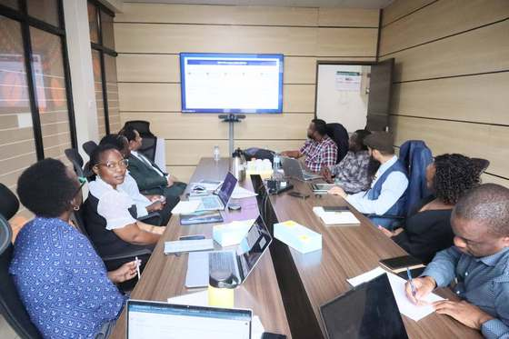
ViewA further round of the Cafe Africa discussion on the platform's coffee-sector strategy.
Wednesday, 26 August 2026
Consultation with eMata, AIC's Technical Partner Across the Pilot Districts
The original plan for a site visit to Mukono changed. In its place, the team held a consultation with eMata, the agricultural lending and aggregator platform that AIC works with across all four pilot districts, to understand farmer and aggregator data directly from a technical partner already active on the ground.
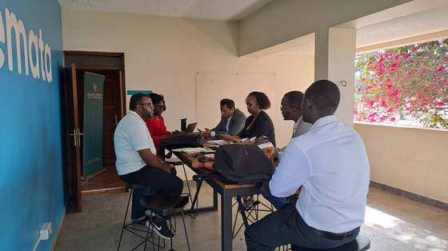
ViewMeeting with eMata, AIC's technical partner across the pilot districts, to review farmer and aggregator data.
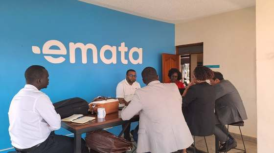
ViewDiscussing eMata's farmer aggregation data across the pilot districts.
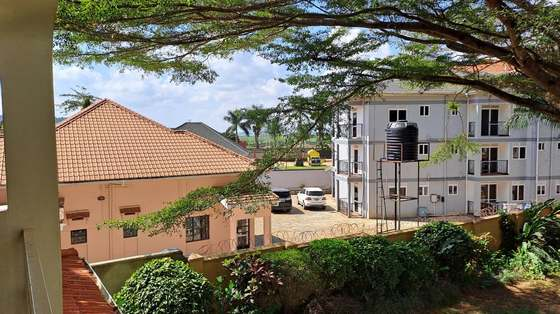
ViewThe eMata office in Kampala, where the day's first consultation was held.
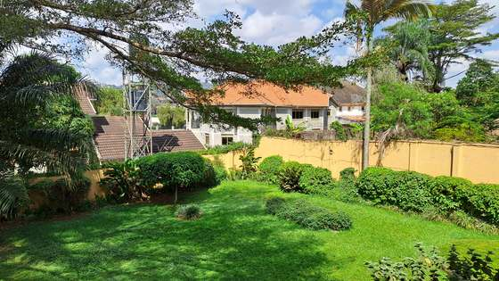
ViewThe garden at eMata's Kampala office, where part of the morning's consultation took place.
Follow-Up Session at AIC on District Data Collection
The team then returned to the AIC office with other partners and stakeholders to continue the platform discussion, focused specifically on how data from Mukono and the other pilot districts can be collected, submitted, and brought into the platform, and how best to source that data from stakeholders on the ground.
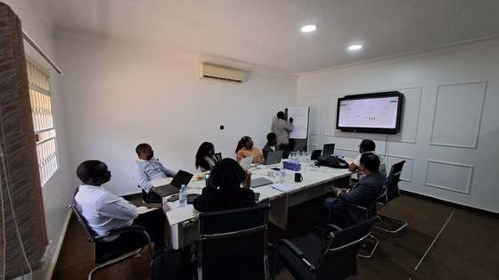
ViewBack at the AIC office with partners, discussing how to collect and feed district-level data into the platform.
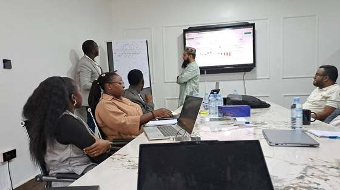
ViewContinued discussion on the data collection approach for Mukono and the other pilot districts.
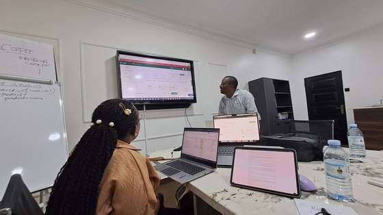
ViewAn afternoon working session on sourcing data from district stakeholders and aggregators.
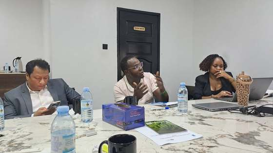
ViewA smaller working group refining the data collection approach with AIC and partners.
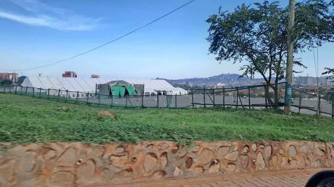
ViewThe day's discussions wrap up on bringing district and stakeholder data into the platform.
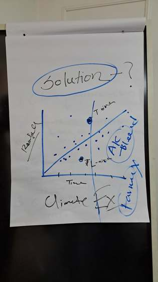
ViewA flip-chart sketch from the session, mapping rainfall and climate risk over time as the team worked toward a data-driven solution.
Thursday, 27 August 2026
Mission Debrief, Recommendations and Departure
The closing session, hosted at the AIC office, brought AIC, UNDP, MoFPED and IRA together to review the mission's preliminary findings and agree on next steps and an implementation roadmap. The Dream71 team departed Kampala the same afternoon.
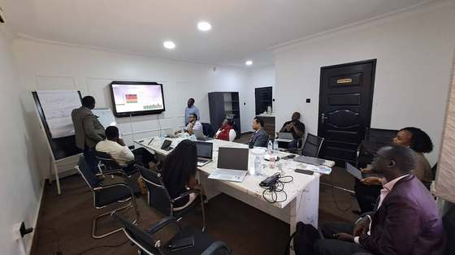
ViewThe mission debrief session at the AIC office, presenting preliminary findings and recommendations.
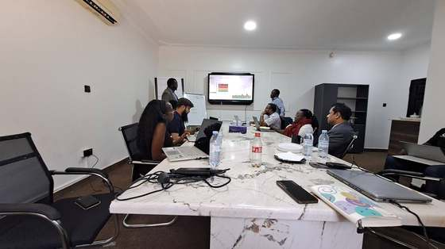
ViewAIC, UNDP, MoFPED and IRA representatives reviewing the mission's findings together.
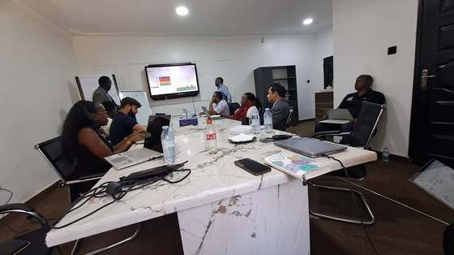
ViewAgreeing on next steps and the implementation roadmap during the debrief session.
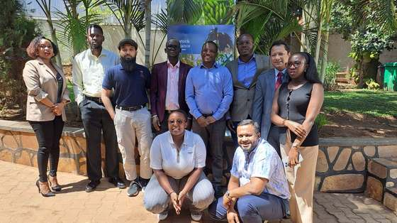
ViewThe Dream71 team and mission partners after the debrief session, ahead of departure.
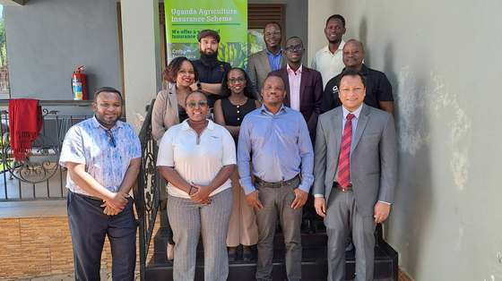
ViewA farewell photo with UNDP and AIC counterparts marking the conclusion of the mission.
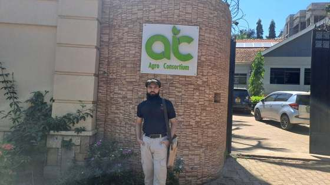
ViewThe Agriculture Insurance Consortium (AIC) office in Kampala, host venue for several of the mission's working sessions.
Gallery: Uganda Beyond the Meetings
Between meetings, the mission also passed through the country itself: the people, the food, the birds overhead, the courts and streets of Kampala's city centre, and the landscapes on the road to Mukono and back.
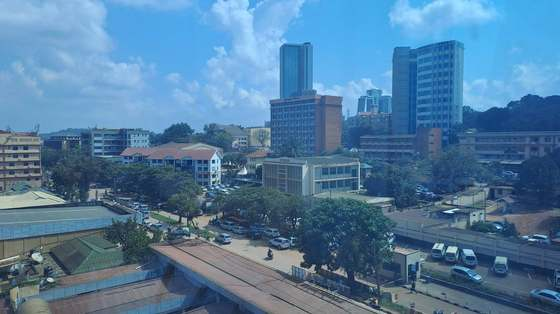
ViewKampala's skyline, seen from a rooftop on the mission's first morning in the city.
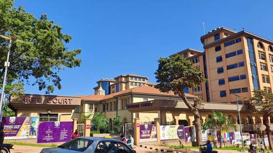
ViewThe High Court and Supreme Court of Uganda, in the heart of Kampala's city centre.
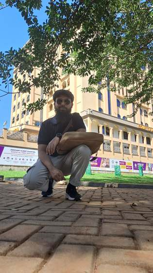
ViewMahir Shahrier outside the Court of Appeal, part of Kampala's judicial complex.
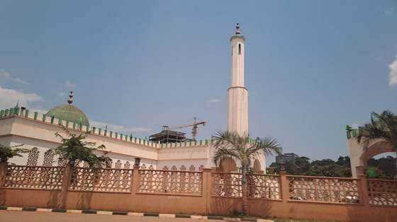
ViewThe Gaddafi National Mosque, one of Kampala's best-known landmarks.ViewA marabou stork keeps watch from a rooftop over central Kampala, a familiar sight across the city skyline.
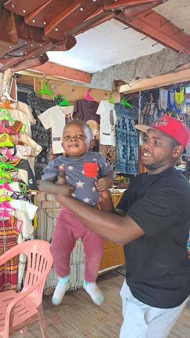
ViewA vendor shares a smile with a little one at a boutique stall in a Kampala market.
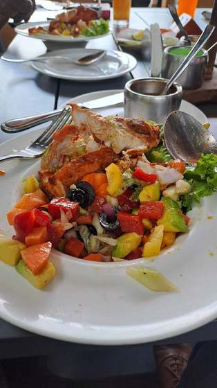
ViewA plate from one of the mission's lunch stops: grilled chicken with a fresh tropical salad.
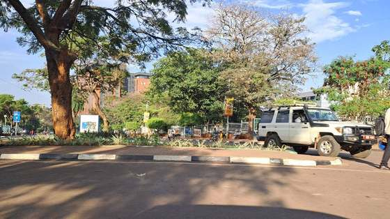
ViewA quiet, tree-lined street near the day's meeting venue.
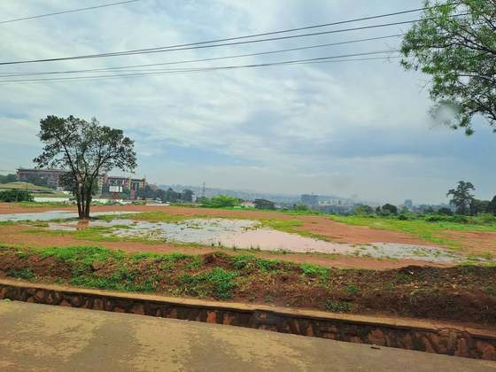
ViewGreen countryside on the road between meetings, under a wide Ugandan sky.
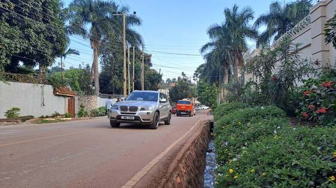
ViewA flowering tree over a red-earth road, on the way to the day's second session.
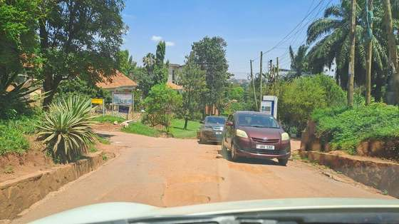
ViewA palm-lined avenue in Kampala.
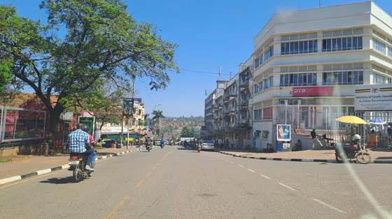
ViewA street corner near the city centre, on the way to a meeting.
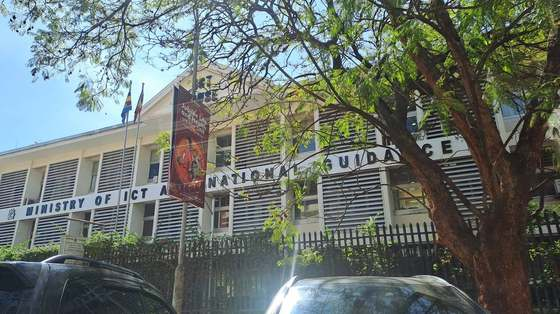
ViewThe highway back into Kampala, with green hills rolling into the distance.
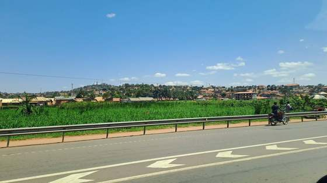
ViewThe greenbelt along the highway, on the road toward the airport.
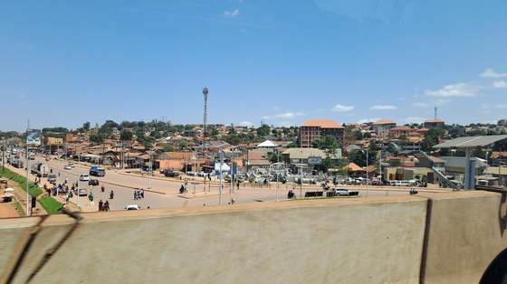
ViewA busy market street, seen from the road.
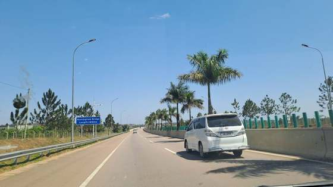
ViewA palm-lined road under a clear sky.
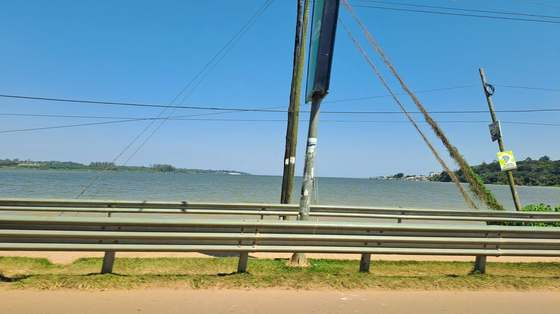
ViewLake Victoria, alongside the highway on the way to the airport.ViewA watchful local resident, spotted along the way during the mission.
With Thanks
The Climate Data Platform is the product of a small, dedicated Dream71 team, and this mission would not have been possible without them.
ViewMahir Shahrier with the Dream71 development team behind the Climate Data Platform: Md. Ariful Islam, Core Developer (standing left), and Amanullah Haque, Developer Lead (seated). Sincere thanks to both for their tremendous work on this platform.ViewMd. Arafat, Project Manager, whose guidance steered this project from the start, thanked here for his mentorship and for the personal and professional grooming tips along the way.